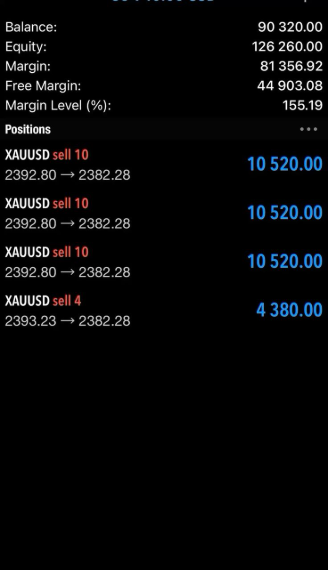
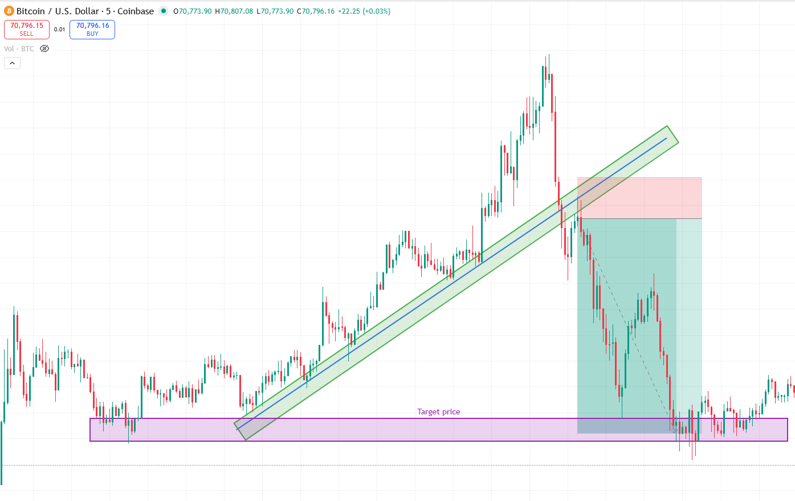
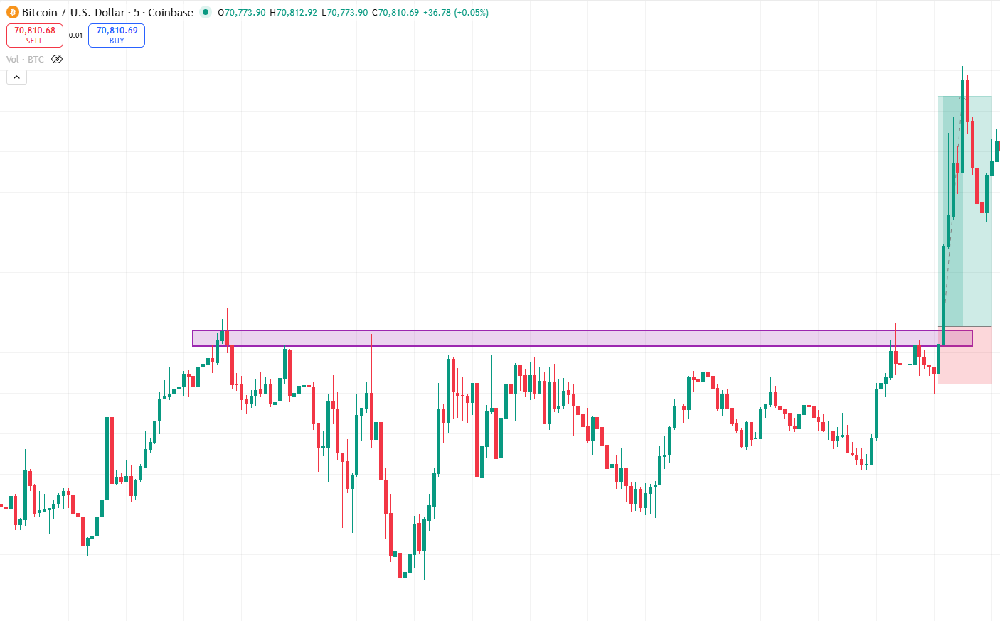

How to use case studies
Do not just look at the outcome. Start with context, then identify the setup, then read the trigger and invalidation. The goal is to understand why the trade made sense before you see whether it won or lost.
Important rule
A good case study can still show a losing trade. The job of the page is not to pretend every trade wins. The job is to show clean logic, disciplined execution, and the lesson that can be repeated next time.



What to notice when reviewing
Homework
Expanded case study library
Use these studies to review both the pattern and the execution quality. Focus on the sequence: context, trigger, invalidation, and realistic target selection.
Breakout after consolidation

A clean compression breaks and expands. Ideal for teaching students how to trade the move from balance into momentum.
Downtrend breakside continuation

The market loses the channel and continues lower. Useful for execution and stop placement review.
Flag pattern continuation

One of the clearest continuation concepts in the course: impulse, pause, breakout.
Resistance break with two targets

A great example for teaching partial profits, first target management, and leaving a runner for the full objective.
Simple breakout with target price

This is the kind of easy-to-recognize setup that helps beginners build confidence and structure.
Strong bitcoin breakout

Powerful crypto breakouts can work well, but they also punish emotional chasing. Use this study to discuss volatility filters.
False breakout losing trade

A valuable reminder that losing trades belong inside a professional course too. This chart teaches risk control and emotional stability.